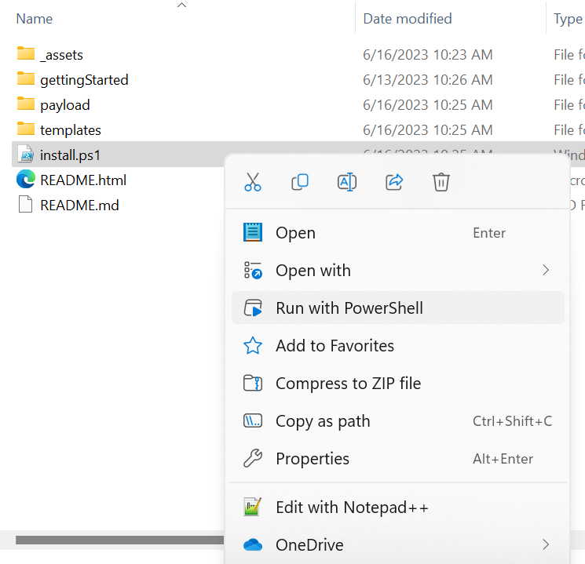
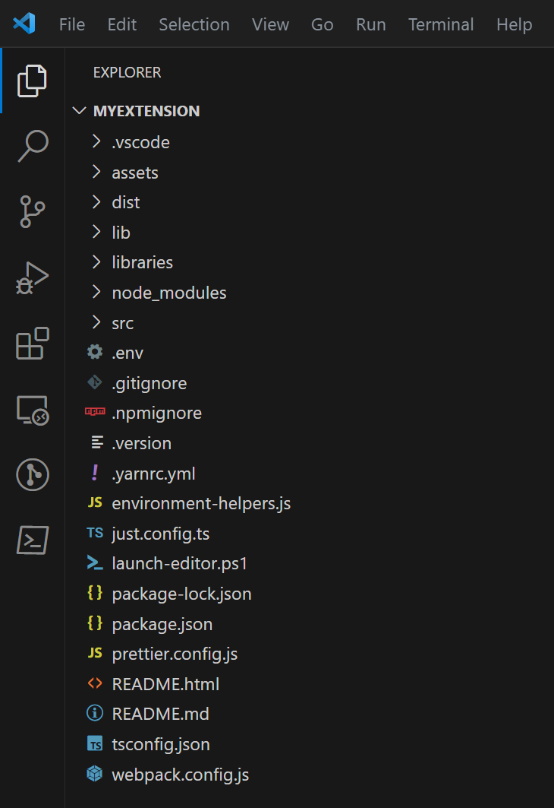
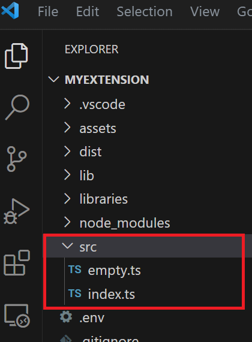

The Minecraft Bedrock Editor Extension Starter Kit is intended to get you up and running in writing your own Minecraft Bedrock Editor extensions. This repo is a supplement to our primary Bedrock Editor GitHub.
An Editor Extension is our way of empowering creators to extend the basic Editor experience by writing custom tools that will make it easier to create cool, fun, and engaging Minecraft worlds.
The Minecraft Bedrock Editor Extension Starter Kit assumes that the creator has at least a rudimentary knowledge of JavaScript AND TypeScript, and is somewhat comfortable with the command line.
Note to non-Windows users:
- Currently the Minecraft Bedrock Editor Extension kit only works in a Windows environment. The underlying code and tools may well be available for other platforms, but some of the utilities we use to simplify the process assume Windows code and data paths.
- If you are experienced with other operating systems and development environments, there's nothing stopping you from taking the basic principles of this kit and setting up your own pipeline (we may well do it ourselves in the future, but just not yet).
Throughout the install process, you will need an active internet connection. The installer actively downloads open-source tooling, libraries and symbols and won't work if the remote servers cannot be contacted.
In order to begin, you will need to make sure you have the following software installed. If you do not have the Required software installed, when you attempt to install the starter kit, it will not let you proceed beyond the software checkpoint.
Node.js - Node.js provides a full command line driven build environment and tool chain for building scripts for Minecraft Bedrock Scripts (and Editor Extensions) and is a basic requirement.
Minecraft Preview - Only Minecraft Preview builds currently supports the Minecraft Bedrock Editor. You can download this from the Microsoft Store or directly from the Minecraft Launcher. We recommend that you run the preview edition at least once before running the installer to ensure that all of the working directories are set up on your computer.
Note: The Editor Starter Kit installs a special
.vscodefile into any new project which sets up a number of recommended Visual Studio Code extensions that should make your development experience easier (code checkers, formatters and a special Minecraft Script Debugger). When you eventually start Visual Studio Code with an Editor Extension project - make sure you install all the recommended extensions when prompted.
We recommend configuring your Windows system settings to enable developer mode.
Hit the WINDOWS key and type developer settings - You should see an option to open `Developer Settings'. Select this.
This will open a Control Panel screen "Privacy & Security > For developers"
Developer Mode.PowerShellIf you skip this step, you may have problems executing some of the command line tools (like CheckNetIsolation.exe and such like).
c:\mcdev.Note: There's currently a bug in one of the open-source packages we use that causes some issues when your extension project is on a different drive letter from the game - so we'd recommend keeping any projects you create on the
C:\drive. This won't be permanent, but at this time we don't have a fix for it.
Navigate to Minecraft Bedrock Editor Extension Starter Kit and either clone the repository to a location on your hard drive or download the kit as a ZIP file and uncompress it to the root of your development folder (i.e. c:\mcdev\EditorExtensionStarterKit)
You can download it directly from Minecraft Bedrock Editor Extension Starter Downloadable Package (from GitHub)
Open Windows PowerShell from the Windows Start Menu (or use WIN+R keys and type powershell).
Note: Just to complicate things, there can be multiple version of PowerShell on your computer.
PowerShell(powershell.exe) is built intoWindows, but there's a newer version (PowerShell Core(pwsh.exe)) that can be downloaded and installed.- Whenever we refer to
PowerShell, we're talking about the defaultWindowsinstall (PowerShell.exe) and not the newerCoreversion.- You can use either one, but use them consistently; Sometimes, commands which you execute on one version will not carry their settings through to the other - so pick one and stick with it (or just use the default
powershell.exe)
Navigate to the location on your hard drive where you placed the Extension Kit Installer. If you downloaded the kit as a ZIP file, ensure you navigate to the unzipped folder location.
You have two options to install:
install.ps1 script in the unzipped folder, and select Run in PowerShell.
cd c:\mcdev\EditorExtensionStarterKit << Use the development folder name you chose here >>
.\install.ps1
Troubleshooting tip: If you see a script permissions error when attempting to run the installer, you may have to change your Execution privileges in PowerShell. Please read the article Set-ExecutionPolicy at Microsoft.com.
You may have to change your current script permissions to allow the installer to run (only do this if you're having a problem running it) using:
Set-ExecutionPolicy -Scope CurrentUser Unrestricted
Referencing the information you prepared in the Before you begin section, follow the prompts and answer the questions.
At the end of the process, you should have a new folder containing all the files, folders and assets required to start writing your new Minecraft Bedrock Editor Extension.
Note:
- If you do need to install any prerequisite packages - please make sure you ALWAYS choose to add the tool to the
PATH(so that any command line systems can locate the tools) - some installer steps may not complete correctly if the tools cannot be found.- We recommend running the installer script from a
PowerShellterminal (not a terminal within an integrated environment likeVisual Studio Code) - the installer pops up a couple of helper dialogs, and sometimes they will appear behind your integrated environment and you won't know that they're there - so just to be safe, open a freshPowerShellfrom theWindowsStart Menu and run the installer from that.
Open Visual Studio Code, and select File > Open Folder and select the folder that you choose to install your new Extension project (e.g. c:\mcdev\myNewProject).
On left hand side of the screen you will see the file explorer window, showing all of the files in your project. Feel free to explore the files (don't change anything yet)!
Go to the top menu bar and select Terminal > New Terminal (or hit CTRL+~). (Our tools should work in any of the different terminal flavors, but we generally favor either PowerShell or Git Bash).
Type the following into the terminal. This will process your project settings and install all of the tools and symbols required by the Extension kit.
npm install
Note: Technically, the installer does this during the install process - but if you ever change any of the version numbers, dependencies or anything like that - you need to re-run the
installstep to ensure that everything is up to date.
The first step is to prepare the behavior and resource pack target folders. These will be deployed to the Minecraft development_behavior_packs and developement_resource_packs folders. These folders are created by Minecraft when you run it for the first time, ahd hold all your own Minecraft worlds as well as templates, packs and other files you may download or create.
Type the following into the terminal. This will prepare the behavior and resoure pack target folders.
npm run prepare
You can open a file explorer and check if you like. (Probably wise to do this the first time around ;) ). This is a super handy folder to remember if you're actively developing for Minecraft. You should probably make a shortcut to it!
Open a Windows File Explorer window and paste this into the address bar:
%LOCALAPPDATA%\Packages\Microsoft.MinecraftWindowsBeta_8wekyb3d8bbwe\LocalState\games\com.mojang
You should see a number of folders in there...
behavior_packs
development_behavior_packs << Your extension will deployed here
development_resource_packs << Your extension will deployed here
development_skin_packs
minecraftWorlds
minecraftpe
resource_packs
skin_packs
world_templates
If you look inside development_behavior_packs you should see a folder with the name of your new extension. There should be a matching folder in development_resource_packs too.
The prepare step is only really needed the first time, or if you ever add new assets (textures, text strings, custom files) to your extension - it basically copies the folders from <install_location>\assets\ to the development packs folders where Minecraft can find them. It does some handy indexing of the folder contents and creates the manifest files required by the game -- so remember: if you add or change ANY new assets (sprites, textures, strings, etc) - run the prepare step.
Note: If you ever add any additional asset files to your project (sprites, textures, icons, strings, etc), then you need to remember to run the
preparestep. This ensures that all of your assets have been deployed to a location where Minecraft can find them.
Try to remember that your new extension project location IS NOT where Minecraft loads or run from - there's always a copy/deploy step to move all of the prepared files into a place and format that Minecraft can use.
New Terminal in Visual Studio Code (make sure you're in the root of your new extension project) and type:npm run build
You can also plave your build in compilation mode using:
npm run build -- --watch
This will run the TypeScript compiler and compile your extension source code. If it compiles successfully, the compiled code will be deployed to the development_behavior_packs\<my extension name [BP]\scripts folder, ready for Minecraft.
Currently, Bedrock Editor is only available in Preview editions of Minecraft Bedrock - you need to make sure that you've installed the Preview edition from the Microsoft Store (or Minecraft Installer). Here is information on installing Preview.
There are a few methods to open Minecraft (Preview) in Editor mode:
npm run launch
PowerShell terminal and type:.\launch-editor.ps1
(You can create a shortcut to this file on your desktop or Start Menu to make it easier)
Minecraft Preview should start up in Editor mode. You can tell it's Editor mode because the usual Play Game and Settings buttons are missing, and you're immediately presented with a Create Project screen.
Once Bedrock Editor is open in Minecraft Preview, create a new project and give it any name you want. Before you leave project creation, go to the Behavior Packs tab and navigate to Available Packs. You should see your new Editor Extension in that list.
Activate the behavior pack in your world project and then add the Resource pack.
Launch the project. Your extension should be loaded into the Editor environment!
First, you need to find the extension source code -- the Starter Kit installed a lot of files in your project folder - so where exactly is the extension code?
src/<sample-name>.ts. Visual Studio Code, then you can open the Explorer panel on the left hand side of the screen and navigate to the src folder. This is where all of the extension source code lives.
Tip: Remember to add a reference to any new exported functions into the
src/index.ts-- this is the entry point for the extension when the game loads it.
The only time you should ever need to restart Minecraft is if you add any new assets (sprites, icons, text, etc.). The Editor environment supports "hot-reloading" of compiled script changes using the /reload command.
Example:
- Create a simple Extension and load it into the Editor using all of the steps above. Once the game is running and your extension is loaded, return to Visual Studio Code (DON'T close the game, leave it running!) and make a simple change that will be visible and re-compile it.
- Return to the game and hit the
/(forward slash) key and type
/reload
- You'll see the Editor quickly disappear and reload, and !voila! - your newly changed script will have been loaded. Try it out to confirm!
As mentioned above, you can also place your compilation into watch mode. This will have your build monitor for changes to any typescript files. When changes are detected, it will automatically recompile and redeploy the files, so that when you reload from within game it picks up your changes automatically. To do this, type:
npm run build -- --watch
Even the best of us need to debug our code to see where we've gone wrong. Often, the simplest way of debugging is to insert lots of "debug output"... throughout your extension, you can insert the JavaScript command:
uiSession.log.debug(`Got as far as initialization`);
(or some message to that effect).
You should see your messages appear in the Log Window. This can often help you determine how far your code got (you can even dump the values of variables and internal states to the output window to help you find your problem).
Sometimes this just isn't enough and you need to use a debugger to step through your code. The Minecraft Bedrock JavaScript engine supports full source-level debugging.
Run & Debug (CTRL+SHIFT+D) icon in the Visual Studio Code side bar, and press itdebugger configuration selectorDebug Editor Extension configuration and hit green PLAY button (F5)listening for a connection from the game./ (forward slash) key and type/script debugger connect localhost 19144
For additional information regarding debugging, the debugger or the script system - you should read through the official general Bedrock Creator documentation or debugger specific documentation.
Once you've made a cool extension, you're going to want to show it off, right?!
In that case, you can use the packaging tools to make a .mceditoraddon file -- this is a packaged up version of your extension that is perfect for distributing to your buddies or other Minecraft Editor users.
Open a Terminal at the root of your Extension project and type:
npm run make-addon
This will build your project, and package up the resource and behavior packs. The resultant .mceditoraddon file will be created in the ./dist folder inside your Extension project folder. Just copy it, email it, pop it on your OneDrive - whatever and wherever you want.
Anyone will be able to double-click open the file and it will automatically be installed into their Minecraft behavior/resource pack folders for them to include in their own Editor projects.
If you do something really cool, let us know on the Mojang Minecraft Editor Github Forum - post some pics and let us see what you created!
This is also the place for Editor and Editor Extension related questions, feedback, and bugs - we encourage you to report any bugs you find so that we can make the project better! We read everything posted there, and we'll address them as fast as we can.
If you have a fantastic idea for an Editor Extension, but feel that the API doesn't expose the functions you need, please get in touch with us to let us know what we're missing! The Editor and its API is by no means finished. It's constantly evolving, and we're really excited to add new functionality and new ways for you to create, as informed by you.
Make sure to add #BedrockEditor to ensure it catches our eye!
Now that you're up and running, you might want to know a little more about how the Editor Extension system works - check out the Getting Started guide; this will help with explanations on how all the Editor systems work, what UI components you have available and how to use them.
%LOCALAPPDATA%\Packages\Microsoft.MinecraftWindowsBeta_8wekyb3d8bbwe\LocalState\games\com.mojang
MinecraftWindowsBeta_8wekyb3d8bbwe.